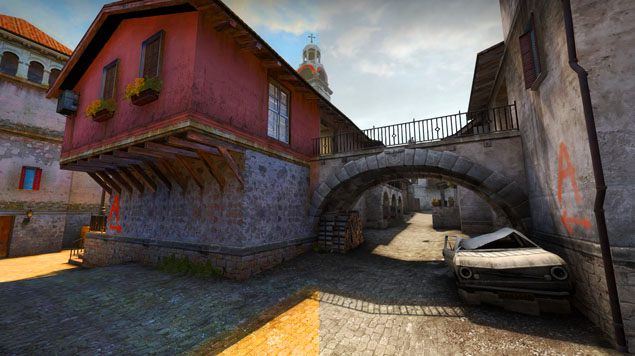

ColorGoggles
Saturation manager for Intel™ and Dual-Graphics laptops.

ColorGoggles v0.1 (beta)
ColorGoggles is an extremely lightweight application that automatically manages your digital saturation when playing games to enhance visibility.
This application is absolutely Vac safe, many professional players are known to tweak their digitar saturation.
This is an alternative to VibranceGUI for people with Intel HD Graphics or dual-graphics laptops.